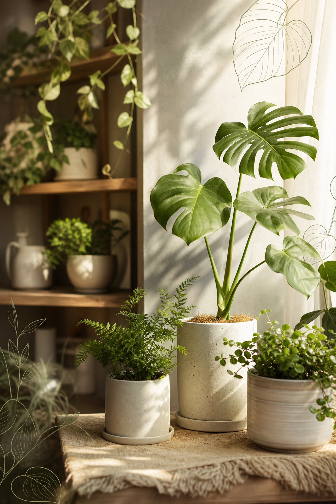
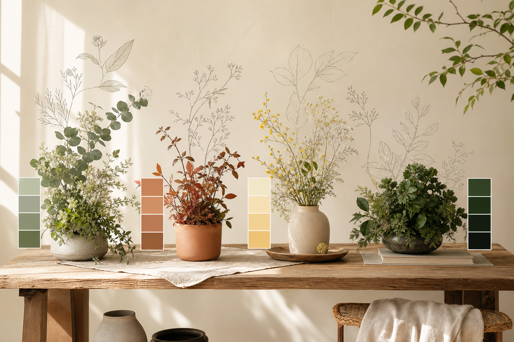
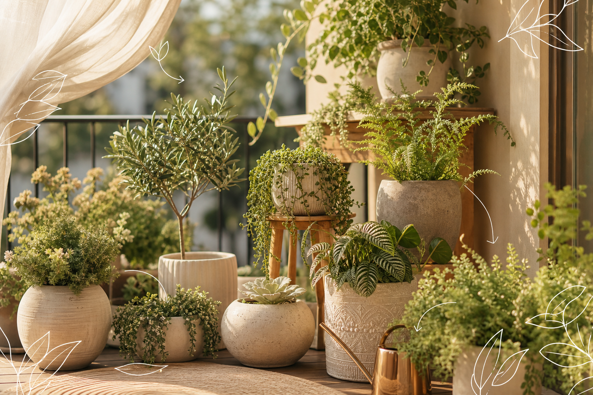

Why Plants
有時候，家需要一點不會催你的生命。
每天要處理很多事情、很多訊息、很多溝通。有些話說不清楚，有些情緒也不一定有人能接住。
但植物很安靜。它不催你，不評價你，也不急著要你變好。你只是替它澆水，看它長出新葉，等它慢慢變茂盛。
那個過程很小，卻會讓人放鬆。家裡有植物以後，空間不只是被布置了，而是多了一個可以讓心慢下來的地方。
有時候，家需要一點不會催你的生命。
每天要處理很多事情、很多訊息、很多溝通。有些話說不清楚，有些情緒也不一定有人能接住。
但植物很安靜。它不催你，不評價你，也不急著要你變好。你只是替它澆水，看它長出新葉，等它慢慢變茂盛。
那個過程很小，卻會讓人放鬆。家裡有植物以後，空間不只是被布置了，而是多了一個可以讓心慢下來的地方。
好的植物配置不是把綠色塞進空間，而是讓視線、光線、動線與人的心情都找到停靠點。

每個家都有自己的光、風、動線與習慣。先看懂家的條件，再讓植物在對的位置留下來。
散射光、葉影、能讓客廳慢下來。
高樓、日照、盆器重量都要一起想。
開門視線要被接住，不只是放裝飾。
小型、低干擾、讓工作節奏安靜一點。
很多人買植物時，先看它漂不漂亮、是不是流行、放在照片裡好不好看。但植物真正能不能留下來，常常不是由喜歡決定，而是由家的條件決定。
方位、光線、樓層、風、空間位置。
療癒、遮擋、香氣、安定感、好照顧。
主植物、中層植物、垂墜與盆器，一起形成配置。

有點像心理測驗。顏色不是答案，但它會透露你想讓家變成什麼狀態。


選一個你現在最想改善的狀態，我們會先給你一個方向，再慢慢配出適合家的綠意。
先用直覺選，再用光線、風、照顧習慣校準，最後得到一份適合家的綠意方向。
這類空間通常不是缺植物，而是缺一個能穩住視線與風感的綠意層次。只放一盆小植物撐不起空間，也無法形成遮擋。
白水木、福祿桐、斑葉非洲茉莉。形成高度、屏障與視覺中心。
虎尾蘭、粗肋草、孔雀木。補中段空隙，讓綠屏更穩。
黃金葛、吊蘭、蕨類。柔化底部，讓配置不僵硬。
每一種配方，都對應一種真實的居家狀態：光、風、照顧習慣，還有你想要的感覺。